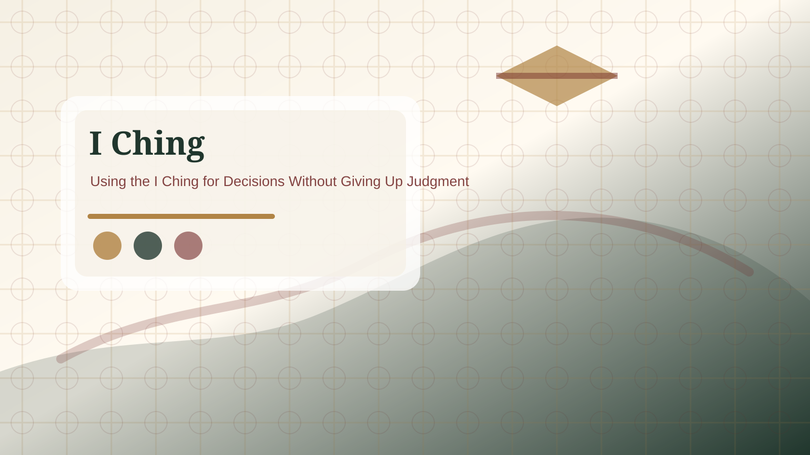

I Ching Career Decision Guide
A career reading is strongest when it supports practical review: facts, timing, pressure points, and one responsible next step.
Start with the real decision
An I Ching career reading is most useful when it names a decision that is actually in front of you. A vague question such as Will my career be successful? usually produces a vague interpretation. A better question asks what should be reviewed before accepting a role, how to approach a difficult project, what risk needs attention, or what kind of timing fits the situation.
Write the decision in ordinary language before casting. Include the real options, the deadline, and the information you already have. This prevents the reading from floating above the facts. The I Ching can help organize reflection, but it should not replace a contract review, salary research, professional advice, or a direct conversation with the people involved.

Good career questions
Career questions should focus on attention and response. Instead of asking, Will I get the job? ask, What should I prepare before this interview? Instead of asking, Should I quit today? ask, What risk should I review before leaving this role? Instead of asking, Will this business succeed? ask, What pattern should I notice before investing more time or money?
This wording keeps the reading useful even when the outside result is unknown. You can still review preparation, communication, timing, resources, and blind spots. A good career reading does not promise promotion, wealth, or protection from failure. It helps you see the decision more clearly before you act.
Read the primary hexagram as the work pattern
The primary hexagram describes the current pattern around the decision. In career questions, that pattern may involve waiting, obstruction, cooperation, leadership, limitation, gradual progress, conflict, or return to basics. Read it as a description of the situation, not as a verdict about your worth.
If the primary hexagram suggests obstruction, identify the obstacle. Is it skill, timing, budget, unclear authority, fatigue, or missing information? If it suggests gradual progress, ask what small steps matter more than a dramatic move. If it suggests conflict, separate the practical issue from pride, fear, or office politics.
Changing lines identify active pressure
Changing lines can show where the career situation is moving. One changing line may point to a specific pressure: a deadline, a misunderstanding, an overcommitment, a hidden cost, or a need to pause. Multiple changing lines usually mean the situation has several moving parts and should be handled with more evidence, not less.
Translate each active line into a plain work question. What is unstable? What needs confirmation? What should be delayed? Who needs clearer communication? What assumption is unsupported? This practice makes the reading usable in meetings, planning notes, job decisions, and project reviews.
Use the relating hexagram as direction, not certainty
The relating hexagram shows a direction created by the changing lines. It does not guarantee that you will get an offer, receive a raise, close a sale, or avoid a mistake. Treat it as a possible development if the active pressure is handled well or poorly. That boundary keeps the reading honest.
For example, a relating hexagram that suggests progress still requires action, skill, timing, and evidence. A relating hexagram that suggests limitation does not mean failure; it may mean the better move is to reduce scope, protect energy, or negotiate clearer terms. A relating hexagram that suggests return may point to revisiting basics before making a public move.
Decision review checklist
Use the checklist after the cast. If the reading encourages a major leap without evidence, slow down. If it points to caution, identify what information would reduce uncertainty. If it points to action, define the smallest responsible move rather than turning the symbol into a command.
When to seek practical advice
For contracts, legal disputes, immigration issues, tax matters, medical limits, debt, investment decisions, or workplace safety, use qualified professional advice. An I Ching reading can help you clarify your question before that conversation, but it should not replace expert review.
The best career reading produces a grounded work note. It may say: verify the offer in writing, ask for the deadline, reduce the project scope, prepare examples before the interview, or wait until the missing number is confirmed. That kind of result is modest, but it is often more useful than a dramatic prediction.